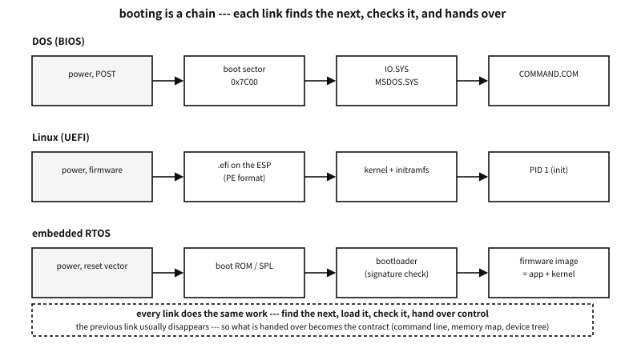

Appendix L — The order in which a machine wakes: booting and bootloaders
chapter 55 asked “who calls main”, and the answer was the operating system. Then who calls the operating system? This appendix follows that question down to the power switch.
The details differ by machine and there is no need to know them all. Hold on to one sentence instead and any machine’s boot can be read. Booting is a chain, and every link does the same work — find the next thing, load it, check it, hand over control.

Figure 105.1 — The chain of booting — the machines differ; the work of each link does not.
Platform note. what this appendix rests on
When the power comes on#
The CPU wakes knowing nothing. Memory holds rubbish, devices are uninitialised, and the very notion of “a program” does not exist yet. The CPU knows one thing — read a fixed address and start executing there. That is the reset vector seen in the appendix on C without an operating system.
At that fixed place a ROM is usually wired, and the program in it is called firmware. On a PC that is the BIOS or the UEFI firmware; on a small chip it is a boot ROM the manufacturer put there.
| What | Why |
|---|---|
| self-test (POST) and memory initialisation | DRAM must be configured before it can be used — until then there is next to no memory |
| waking the minimum of devices | because the next stage has to be read from a disk or USB |
| finding the next stage | which place on which device to read is exactly “the boot order” |
| checking what was read | a signature check (secure boot), or the last two bytes of the older unsigned way |
| handing over control | and having handed over, it usually disappears |
Table 105.1 — What the firmware does
The BIOS era — 512 bytes was all there was#
The old PC’s way is startlingly simple. The BIOS loads the first 512-byte sector of the boot device at address 0x7C00, checks that its last two bytes are 0x55 0xAA, and if so jumps there. That is all. Those 512 bytes are the boot sector, and the first sector of the whole disk is the MBR (master boot record).
Building one shows where the space goes. But first, be clear about what is being built.
Platform note. what this demonstration does and does not do
This program does not touch a disk. It opens no file, touches no device, writes nothing. It does one thing — it keeps a single array, unsigned char mbr[512], in memory, fills it exactly as the old convention says, and then reads back what it filled and decodes it. So instead of describing in words what the first sector of a disk looks like, it builds it in bytes.
Compile it and run it and only text appears. No privilege is needed, no file is left, there are no side effects. To make a real disk bootable with those 512 bytes they would have to be written to sector 0 of a device, and this example deliberately does not take that step — code that can destroy somebody’s machine does not go into this book.
examples-en/apx-boot/disk_layout.c
/* 디스크의 첫 섹터에 무엇이 있는가 --- 직접 만들어 보고, 다시 읽어 본다.
주의: 이 프로그램은 디스크를 건드리지 않는다. 파일도 장치도 열지 않고, 아무것도 쓰지
않는다. 기억 속의 배열 하나를 옛 규약 그대로 채운 뒤, 그 배열을 다시 읽어 해독해
화면에 찍을 뿐이다. 돌리면 글자만 나오고 끝난다.
여기서 만드는 바이트는 진짜 규칙을 따른다: 512바이트, 0x1BE 의 파티션 표 네 칸,
그리고 끝의 0x55 0xAA. GPT 를 쓰는 디스크의 첫 섹터(보호 MBR)와 EFI PART 헤더도
같이 만든다. 이 바이트를 실제 디스크의 0번 섹터에 쓰는 일은 하지 않는다. */
#include <stdio.h>
#include <stdint.h>
#include <string.h>
static uint32_t crc32(const void *buf, size_t n)
{
const unsigned char *p = buf;
uint32_t c = 0xFFFFFFFFu;
for (size_t i = 0; i < n; i++) {
c ^= p[i];
for (int k = 0; k < 8; k++)
c = (c >> 1) ^ (0xEDB88320u & (uint32_t)-(int32_t)(c & 1));
}
return c ^ 0xFFFFFFFFu;
}
static void put32(unsigned char *p, uint32_t v)
{ p[0] = v & 0xff; p[1] = v >> 8 & 0xff; p[2] = v >> 16 & 0xff; p[3] = v >> 24; }
static void put_part(unsigned char *e, uint8_t boot, uint8_t type,
uint32_t lba, uint32_t count)
{
e[0] = boot; /* 0x80 이면 「이것으로 부팅」 */
e[1] = 0xfe; e[2] = 0xff; e[3] = 0xff; /* 옛 CHS 자리 --- 이제는 채우는 시늉만 한다 */
e[4] = type;
e[5] = 0xfe; e[6] = 0xff; e[7] = 0xff;
put32(e + 8, lba); /* 시작 --- 이쪽이 진짜로 쓰인다 */
put32(e + 12, count);
}
static void hexdump(const unsigned char *p, size_t off, size_t n)
{
for (size_t i = 0; i < n; i += 16) {
printf(" %04zx ", off + i);
for (size_t j = 0; j < 16; j++) printf("%02x%s", p[off + i + j], j == 7 ? " " : " ");
printf("\n");
}
}
int main(void)
{
unsigned char mbr[512] = { 0 };
/* (1) 부트스트랩 자리 --- 446바이트. 진짜 부트로더의 첫 조각이 여기 들어간다. */
memcpy(mbr, "\xfa\x31\xc0\x8e\xd8\x8e\xd0\xbc\x00\x7c", 10); /* cli; 세그먼트·스택 차리기 */
printf("how the first sector divides up\n");
printf(" 0x000 - 0x1bd : bootstrap code, %d bytes\n", 0x1be);
printf(" 0x1be - 0x1fd : partition table --- 16 bytes x 4 entries\n");
printf(" 0x1fe - 0x1ff : signature 0x55 0xaa\n\n");
/* (2) 파티션 표 --- 흔한 배치 하나를 적어 둔다 */
put_part(mbr + 0x1be, 0x80, 0x83, 2048, 1024000); /* 부팅 가능, 리눅스 */
put_part(mbr + 0x1ce, 0x00, 0x82, 1026048, 262144); /* 리눅스 스왑 */
mbr[510] = 0x55; mbr[511] = 0xaa;
printf("the partition table (from 0x1be)\n");
hexdump(mbr, 0x1be, 32);
printf("\n entry 1: bootable %s · type 0x%02x (Linux) · start LBA %u · %u sectors (%u MiB)\n",
mbr[0x1be] == 0x80 ? "yes" : "no", mbr[0x1be + 4],
2048u, 1024000u, 1024000u / 2048u);
printf(" entry 2: bootable %s · type 0x%02x (swap) · start LBA %u\n\n",
mbr[0x1ce] == 0x80 ? "yes" : "no", mbr[0x1ce + 4], 1026048u);
printf("the last two bytes: %02x %02x --- %s\n\n", mbr[510], mbr[511],
(mbr[510] == 0x55 && mbr[511] == 0xaa)
? "the BIOS accepts this as a boot sector only with these" : "not a boot sector");
/* (3) GPT 를 쓰는 디스크의 첫 섹터 --- 보호 MBR */
unsigned char pmbr[512] = { 0 };
put_part(pmbr + 0x1be, 0x00, 0xee, 1, 0xffffffffu); /* 0xEE = 「여기부터 끝까지 남의 것」 */
pmbr[510] = 0x55; pmbr[511] = 0xaa;
printf("the protective MBR (first sector of a GPT disk)\n");
printf(" partition type 0x%02x --- it tells old tools the disk is fully used\n",
pmbr[0x1be + 4]);
printf(" the reason: to stop a tool that does not know GPT taking it for empty\n\n");
/* (4) 진짜 지도는 두 번째 섹터(LBA 1)에 있다 --- GPT 헤더 */
unsigned char gpt[92] = { 0 };
memcpy(gpt, "EFI PART", 8);
put32(gpt + 8, 0x00010000u); /* 개정 1.0 */
put32(gpt + 12, 92); /* 헤더 크기 */
put32(gpt + 16, 0); /* CRC 자리는 0 으로 두고 계산한다 */
put32(gpt + 16, crc32(gpt, 92));
printf("the GPT header (LBA 1)\n");
printf(" signature : %.8s\n", gpt);
printf(" header CRC32: 0x%08x --- it checks itself (this field is zero while computing)\n",
(unsigned)(gpt[16] | gpt[17] << 8 | gpt[18] << 16 | (uint32_t)gpt[19] << 24));
printf(" and the same table exists once more at the very end of the disk, to survive damage\n");
return 0;
}
Output
how the first sector divides up
0x000 - 0x1bd : bootstrap code, 446 bytes
0x1be - 0x1fd : partition table --- 16 bytes x 4 entries
0x1fe - 0x1ff : signature 0x55 0xaa
the partition table (from 0x1be)
01be 80 fe ff ff 83 fe ff ff 00 08 00 00 00 a0 0f 00
01ce 00 fe ff ff 82 fe ff ff 00 a8 0f 00 00 00 04 00
entry 1: bootable yes · type 0x83 (Linux) · start LBA 2048 · 1024000 sectors (500 MiB)
entry 2: bootable no · type 0x82 (swap) · start LBA 1026048
the last two bytes: 55 aa --- the BIOS accepts this as a boot sector only with these
the protective MBR (first sector of a GPT disk)
partition type 0xee --- it tells old tools the disk is fully used
the reason: to stop a tool that does not know GPT taking it for empty
the GPT header (LBA 1)
signature : EFI PART
header CRC32: 0x36425678 --- it checks itself (this field is zero while computing)
and the same table exists once more at the very end of the disk, to survive damage
The demonstration goes in four steps.
- It declares the space. It prints the 512 bytes divided as 446 + 16×4 + 2. The ten bytes at the front (
fa 31 c0 8e d8 …— disabling interrupts and setting up segments and the stack) are there to show what the beginning of a real bootloader usually looks like; it is not a working bootloader. - It writes two partition entries by the convention. The boot flag
0x80, the types0x83(Linux) and0x82(swap), the starting LBA and the sector count as four little-endian bytes. The old CHS fields are filled withfe ff ffas is customary — the idiomatic value meaning “a size CHS cannot express”. And55 aagoes into bytes 510 and 511. - It reads back what it wrote. It prints those 64 bytes in hex and recovers “bootable, type 0x83, starting LBA 2048, 500 MiB” from the same bytes. Whether writing and reading use the same convention shows up on the spot.
- It builds the GPT side the same way. A protective MBR covering the disk with a single type
0xEEpartition, and a 92-byte header carrying theEFI PARTsignature whose CRC32 is computed with the CRC field zeroed and then written into that field — exactly as the specification says. The0x36425678in the output is that genuinely computed value. The GUIDs and LBA fields are zero, though, so it is a specimen of the shape, not a usable GPT header.
What you get from this is not “which field is at which byte”. It is one number: 446 bytes. That narrow space explains everything that follows.
| Offset | Size | What |
|---|---|---|
0x000 | 446 bytes | bootstrap code — only the first piece of a bootloader fits |
0x1BE | 16 bytes × 4 | the partition table — which is why there were only four primary partitions |
0x1FE | 2 bytes | 0x55 0xAA — without it this is not a boot sector |
Table 105.2 — How the MBR’s 512 bytes divide up
Code that loads an operating system cannot possibly fit in 446 bytes. So every old bootloader was split into several stages — the first piece knows only where the second is, the second knows how to read a filesystem, and the one after that loads the kernel.
A common misconception. the MBR is the partition table
The layout of the disk — from MBR to GPT#
Four partitions and a 32-bit LBA (the 2 TiB limit) soon grew tight. GPT (the GUID Partition Table) took that place, and the latter half of the demonstration above is that story.
- The first sector still holds an MBR. Only now a single partition of type
0xEEcovers the whole disk — the protective MBR. It exists to stop old tools that do not know GPT from taking the disk for empty and overwriting it. - The real layout is in the GPT header in the second sector (LBA 1). Its signature is
EFI PART, it carries a CRC32 of itself, and a second copy of the same table sits at the very end of the disk.
The individual fields of both schemes, and the filesystems inside the partitions, are covered in tables in the appendix on how a disk is divided. Here we look only as far as the chain story needs.
★ The difference between the old way and the new comes down to two words: checking and copies. A CRC takes over the “is this right” that two bytes of 0x55 0xAA used to do, and a table that existed once now exists twice. Reliability design is largely a repetition of those two.
UEFI — the firmware reads a filesystem#
UEFI removes the “512 bytes” constraint altogether. The firmware knows how to read a FAT filesystem, finds an executable in one partition of the disk (the ESP, the EFI System Partition), and simply runs it.
Here the previous appendix joins on. That executable is in PE format — the same clothes as a Windows executable, with only the subsystem field in the header saying “UEFI application”. The filename is agreed too: with no configuration at all, the firmware looks for \EFI\BOOT\BOOTX64.EFI.
| BIOS | UEFI | |
|---|---|---|
| how the next stage is found | it reads the whole first sector | it reads a file from the ESP |
| size limit | 512 bytes | effectively none |
| format | raw bytes | a PE executable (.efi) |
| execution mode | 16-bit real mode | 64-bit, from the start |
| what is handed over | almost nothing | the memory table and services for reaching devices (boot services) |
| verification | 0x55 0xAA | a signature (secure boot) — or it is turned off |
Table 105.3 — The BIOS way and the UEFI way
Q. If UEFI can run a file, why is a bootloader still needed?
A. It is not strictly needed. The Linux kernel can be an .efi executable itself (the EFI stub), and then the firmware starts the kernel directly. Bootloaders survive for “choosing” and “handing over” — something has to decide which of several kernels or operating systems to start, and with which command line and which initramfs.
What a bootloader actually does#
The names vary; the work is the latter part of Table 105.1. How that “same work” gets done differs quite a lot between ways, though, and most of the trouble met in practice comes from those differences. Let me open them one at a time.
| Name | Where | Character |
|---|---|---|
| GRUB | the default in Linux distributions | several stages, reads filesystems, menus and configuration |
| systemd-boot | UEFI only | very thin — the firmware already reads files, so it merely sits on top |
Windows bootmgr | Windows | reads a configuration store called BCD and chooses |
| U-Boot | embedded Linux | SPL (a small first piece) then the body; hands a device tree to the kernel |
| MCUboot | microcontrollers | signature checking, two slots, rollback on failure |
| the EFI stub | the Linux kernel itself | the kernel is the .efi — it starts with no bootloader |
Table 105.4 — Bootloaders commonly met
Why several stages — the shadow of 446 bytes#
In the old BIOS way the first piece is allowed 446 bytes — what is left of 512 after the partition table and the signature (the full layout table is in the disk appendix). Code that reads a filesystem cannot fit there. So the bootloader splits.
| Stage | Where it lives | Size | What it does |
|---|---|---|---|
boot.img | the 446 bytes of the MBR | 446 bytes | knows only one sector number for the next piece, reads it and jumps |
core.img | the empty space after the MBR (the MBR gap), or GPT’s BIOS boot partition | tens of KiB | decompresses itself, loads filesystem modules and becomes able to read /boot |
modules and grub.cfg | usually /boot/grub (inside a real filesystem) | a few MiB | draws the menu, chooses and loads a kernel and initramfs |
Table 105.5 — GRUB’s stages (the old BIOS way)
★ The second row is the point. boot.img cannot find the next piece by filename — it knows no filesystem. It embeds a sector number instead. Which is why there must be “empty space outside any filesystem” for core.img to sit in.
| Disk scheme | The place | Size |
|---|---|---|
| MBR (modern alignment) | LBA 1 to 2047 — the space before the first partition (the “MBR gap”) | about 1 MiB |
| MBR (old 63-sector alignment) | LBA 1 to 62 | about 31 KiB — and it did run short |
| GPT | a BIOS boot partition of type GUID 21686148-… | usually 1 MiB |
Table 105.6 — Where core.img lives
Q. Why does a GPT disk need an empty “BIOS boot partition”?
A. GPT uses LBA 1 through 34 for its own tables. The old MBR gap is gone. But booting from an old BIOS still needs core.img to sit outside any filesystem. So a 1 MiB partition “that nobody formats” is created and it goes in there. It is reached by sector, not as a file, which is why looking empty inside is normal.
Counter-example. pointing at the kernel with a block list
The UEFI path — found by name and by variable#
In UEFI all this indirection disappears. Because the firmware can read FAT, the bootloader is simply a file (see the ESP entry in the disk appendix).
| Step | What it looks at | Note |
|---|---|---|
| 1 | the BootOrder variable in NVRAM | Boot0001, Boot0003 … the order to try |
| 2 | each BootXXXX variable | holds “which file on which device” (for example \\EFI\\ubuntu\\shimx64.efi on the ESP) |
| 3 | the fallback, if absent or all failed | \\EFI\\BOOT\\BOOTX64.EFI on the ESP — the agreed name |
Table 105.7 — The order in which UEFI firmware looks for the next thing
★ So on a UEFI machine, “the boot order vanished” means the variables on the mainboard were cleared, not anything on the disk. That is why the fallback name exists — and it is that agreement that lets one USB stick boot any machine.
| Step | What | Signed by |
|---|---|---|
| 1 | shimx64.efi | Microsoft — which is why most firmware trusts it |
| 2 | grubx64.efi | the distribution — shim checks it with its own keyring |
| 3 | the kernel | the distribution. Modules you build yourself must be enrolled through MOK |
Table 105.8 — How Linux starts with secure boot enabled
Without a bootloader — the Linux EFI stub#
A Linux kernel image can be built as a PE executable in its own right. Then the firmware runs the kernel directly. Thin and fast, at a price — there is no menu, and who supplies the command line and the initramfs becomes a question (embedded in a firmware variable, or built into the kernel).
Embedded — U-Boot and MCUboot#
On a small machine you start from a place where there is not even RAM yet.
| Stage | Where it runs | Size | What it does |
|---|---|---|---|
| the boot ROM | ROM inside the chip | fixed | reads the next piece from a fixed device. It cannot be changed — the root of trust |
| SPL | on-chip SRAM (tens of KiB) | small | initialises the DDR. Only then can anything large be loaded |
| U-Boot proper | DDR | hundreds of KiB | reads its environment (bootcmd), loads the kernel, device tree and initramfs, and hands over |
Table 105.9 — The stages of the U-Boot family
| Mechanism | What | Why |
|---|---|---|
| two slots | the running image and the new one, each in its own place | the old one survives a failed update |
| an image header | magic, version, size | “there is a real image here” |
| trailers (TLVs) | a hash and a signature | the bootloader checks before running it |
| a test boot | “just this once” with the new image | if the new image cannot confirm itself, the next boot goes back |
Table 105.10 — How MCUboot makes an update safe
What is handed over at the handover#
Each link of the chain leaves luggage for the next before it disappears. The list of that luggage is the contract.
| From → to | Where | What | Note |
|---|---|---|---|
| BIOS → boot sector | a register | the drive number booted from | that is all. The memory map has to be asked for separately |
| bootloader → Linux kernel | an agreed struct | the command line, the address and size of the initramfs, the memory table | called “the boot protocol” |
UEFI → an .efi application | two arguments | the image handle and the system table (the list of services) | call ExitBootServices and the boot services end |
| U-Boot → kernel | a register | the address of the device tree | “what is attached to this machine” is inside it |
| MCUboot → application | the vector table | the start address of the image to run | the stack pointer and the entry point |
Table 105.11 — What passes across at each change of stage
★ Look closely at ExitBootServices in the UEFI row. Until that call the firmware handles disk, screen and network on your behalf. After it those services are all gone and only a copy of the memory table remains. “The moment the operating system takes over the machine” is pinned down exactly, by one function call.
When it will not boot — telling links apart by symptom#
| Symptom | Which link | What happened | What to look at first |
|---|---|---|---|
| nothing on the screen | the firmware | it could not even finish POST | memory, power, display connection. Beep codes |
| “no boot device” | firmware → next link | it could not find a boot sector or .efi | boot order, whether the disk is seen, whether an ESP exists |
a grub rescue> prompt | core.img → modules | it started but cannot read /boot | whether partition numbers changed, whether /boot is intact |
| the menu appears but no kernel starts | bootloader → kernel | the file is missing or the signature does not match | the kernel and initramfs files, secure boot |
| “secure boot violation” | the firmware’s check | no signature, or an unknown key | shim/MOK enrolment, or turning secure boot off |
VFS: Unable to mount root | kernel → root | the initramfs could not open the root | root= on the command line, whether the driver is in the initramfs |
dropped into an initramfs shell | inside the initramfs | the root device is not visible yet | whether the UUID matches, whether the disk appears late |
Table 105.12 — Symptom → which link of the chain
By operating system — what happens after that#
MS-DOS#
The boot sector reads IO.SYS, which loads MSDOS.SYS (the kernel proper), then CONFIG.SYS is read to load device drivers, and finally COMMAND.COM starts. Then AUTOEXEC.BAT runs. The chain is laid bare as filenames, which is why users of that era could edit their boot process.
Windows#
| Era | Chain |
|---|---|
| NT, 2000, XP | NTLDR → choosing via boot.ini → ntoskrnl.exe + hal.dll + boot drivers |
| Vista onwards (7, 8, 10, 11) | bootmgr → BCD (the configuration store) → winload.efi → ntoskrnl.exe |
| common (after the kernel) | smss.exe (the session manager) → csrss.exe and winlogon.exe → services.exe |
Table 105.13 — The Windows boot chain
What changed is where “choosing” lives. A text file (boot.ini) became a binary store (BCD), and it became a .efi executable. What did not change is the shape of the chain.
Linux#
- The bootloader loads the kernel image (
vmlinuz) and the initramfs into memory and hands over a command line. - The front of the kernel image is code that unpacks itself. It decompresses and jumps to the real kernel.
- The kernel builds its own data structures and takes the initramfs as a temporary root filesystem.
/initinside the initramfs loads the drivers needed to find the real root.- Having switched to the real root (
switch_root), it runsinit(usually systemd these days) as PID 1.
Q. Why does the initramfs exist?
A. Because of a chicken and egg. Build a kernel without knowing which disk, which filesystem or which encryption the root sits on, and the driver to read it is not in the kernel either. And every driver in the world cannot be built in. So a small root already in memory is given first, and from there only the needed drivers are loaded to open the real root.
RTOSes and small machines#
Small machines usually have no stage that “loads an operating system”, because the kernel is linked together with the application into one image. FreeRTOS, Zephyr and NuttX are like this. Startup code runs from the reset vector, main is called, and starting the scheduler there sets the tasks running.
That does not mean there is no bootloader. If anything, a bootloader’s original job is clearest here.
In practice. when the power fails during an update
The chain is a chain of trust#
Each link checks the next, it was said. Make that check a signature and the whole chain becomes a chain of trust — the firmware checks the bootloader’s signature, the bootloader the kernel’s, the kernel the modules’. Secure boot and embedded signed boot are the same story.
★ One property of this structure is worth stating. A chain can only create trust at its head. The first link (code inside ROM) must be unchangeable, which is why that place is called the root of trust. Shake the root and every check behind it means nothing — the checking code itself could have been swapped.
What to take from this#
Recap
- Booting is a chain, and each link finds, loads, checks and hands over.
- The BIOS read 512 bytes whole; UEFI reads a PE executable from a filesystem.
- The MBR’s layout (446 + 64 + 2) explains why old bootloaders had several stages.
- GPT rebuilt the same job out of checking (a CRC) and copies (a second table at the end).
- Linux’s initramfs breaks the circle of “the driver that opens the root is inside the root”.
- On a small machine the kernel is one image with the application, and the bootloader’s job becomes safe updating.
- Make the check a signature and the chain becomes a chain of trust, whose root must be a place that cannot be changed.